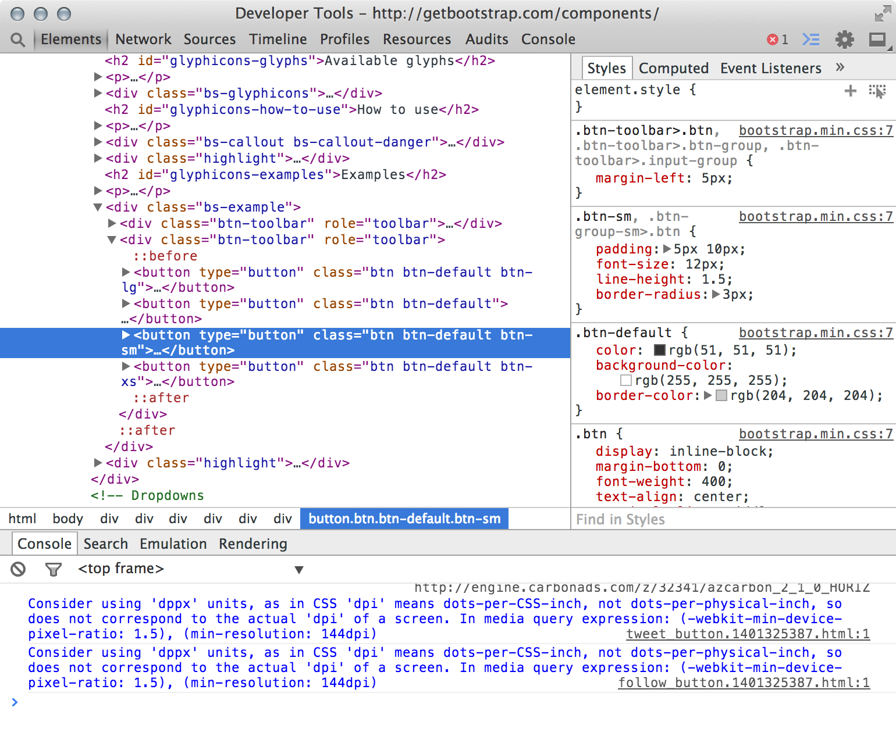
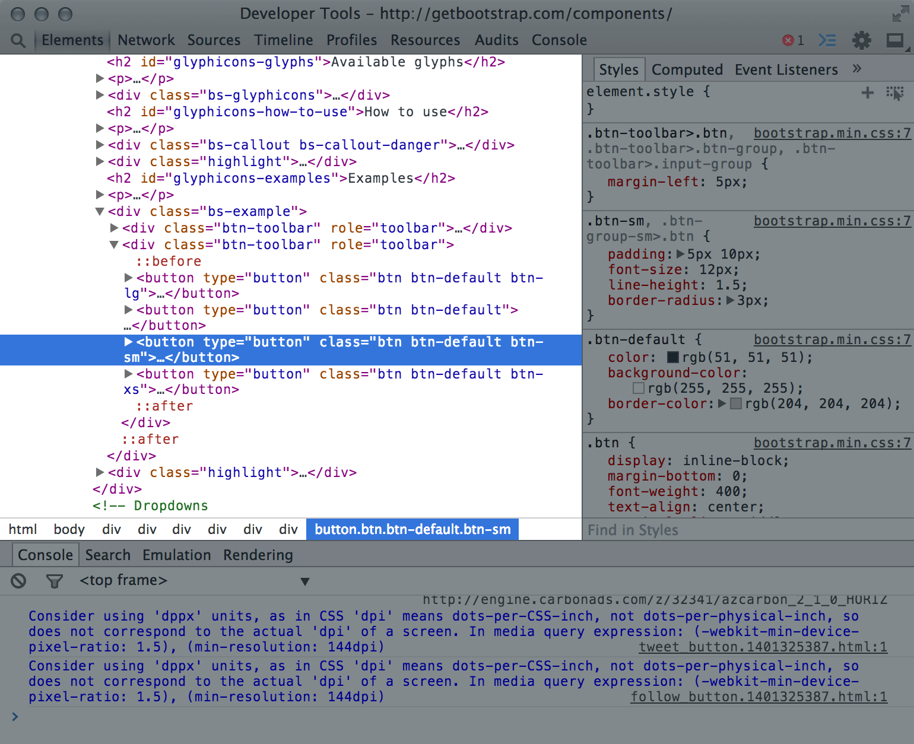
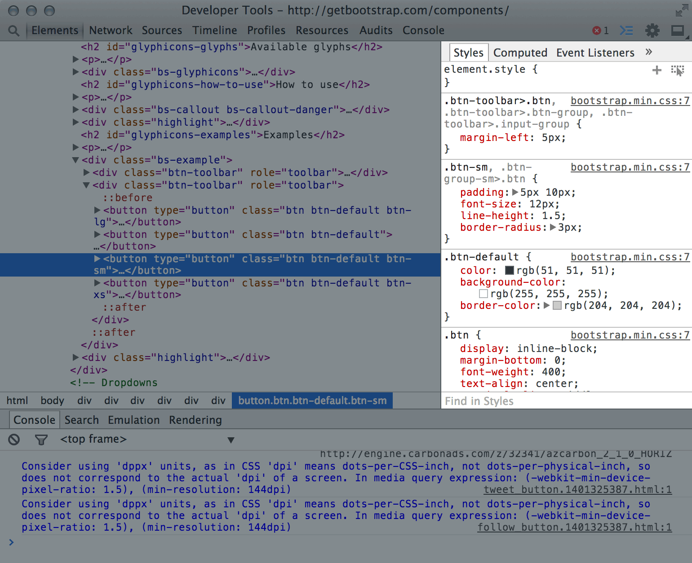
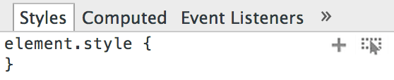

Welcome Back!
Here’s a quick recap of yesterday:
- The internet is awesome.
- HTML is weird.
- Shawn makes boring slides and talks too much.
Follow Along:
http://sta.mn/32f
Images!
Images are embedded via the <img> element:
<img src="http://placekitten.com/400/250">
The src is an image URL, which can be either fully
qualified (with the http:// prefix, domain, etc.) or a
relative path to an image file (src="images/kitten.jpg").
Image Sizing
By default, images have no width or height until the browser loads them. This can sometimes result in jarring layout changes.
The width and height attributes can be used to tell the browser how big the image is before it’s loaded.
<img src="http://placekitten.com/300/200"
width="300" height="200">
SVG
Scalable Vector Graphics are the Internet’s vector format.
They encode shapes rather than pixels:
<svg width="250" height="250">
<g transform="translate(125,125)">
<circle fill="yellow" r="125"></circle>
<circle fill="cyan" r="100"></circle>
<circle fill="magenta" r="75"></circle>
</g>
</svg>
See also: <img src="image.svg">
Let’s Play!
http://cssdeck.com/labs
CSS
Cascading Style Sheets
They give HTML style.
Why CSS?
CSS was created to separate substance
(your content) from style (its appearance).
Before CSS, HTML mostly looked like this:
<p><font size="10">This is a paragraph with <font color="red">red text</font>.</font></p>
But with CSS you can make rules that define
the style for different elements:
<style>
p { font-size: 10px; }
b { color: red; }
</style>
<p>This is a paragraph with <b>red text</b>.</p>
CSS Syntax
selector(s) {
property: value;
}
Multiple selectors are separated by a comma:
h1, h2 {
font-style: italic;
}
You can have as many properties as you want in a rule. To make
all <h2> elements red and centered, for instance:
h2 {
color: red;
text-align: center;
}
CSS Properties
| text color | color: red; |
| background color | background-color: yellow; |
| border | border: 4px dashed green |
| text shadow | text-shadow: 0 0 5px blue |
Shorthand & Compound Properties
Some properties accept multiple values, for instance:
fontis a shorthand that can set many font-related properties at once.borderandbackgroundalso serve as shorthand for a collection of related properties.marginandpaddingtake 1, 2, 3 or 4 values:top right bottom lefttop right bottom(left = right)top right(bottom = top, left = right)top(top = right = bottom = left)
CSS Units
Most property values can be expressed in terms of
different measurement units.
| unit | description | e.g. |
|---|---|---|
px |
absolute pixels | 20px |
% |
percentage of the parent value | 200% |
em |
relative to the parent font-size | .5em |
rem |
relative to the root element’s value | 2rem |
vw/vh |
percentage of the viewport width/height | 50vw |
Note: the value 0 can be specified without units.
CSS Colors
Colors can also be expressed in different formats:
| format | description | e.g. |
|---|---|---|
name |
W3C named colors | blue, salmon |
#rgb |
hexadecimal red, green, blue (RGB) |
#f3c, #00dead |
rgb(r,g,b) |
decimal RGB | rgb(64,128,255) |
hsl(h,s,l) |
hue, saturation, value | hsl(180,50%,50%) |
transparent |
.. | transparent |
There’s also rgb() and hsla() to control alpha, or opacity.
Font Properties
| size | font-size: 50px |
| family | font-family: "Helvetica Neue" |
| weight | font-weight: bold |
| style | font-style: italic |
| everything! | font: italic bold 60px “Helvetica Neue” |
Layout Properties
| text-align | text-align: center |
| padding | padding: 20px |
| margin | margin: 40px |
| float | float: right |
| display |
display: inlinedisplay: block(also: display: none)
|
Positioning
The CSS position property, combined with
top, left, bottom and right, allows you to
arbitrarily position elements on the page:
| relative |
position: relative;
top: -20px;
|
| absolute |
position: absolute;
left: 50px;
top: 100%;
|
| fixed |
position: fixed;
right: 0;
bottom: 0;
|
Display Properties
| opacity |
opacity: .5opacity: .2
|
| transform |
transform: rotate(-15deg)
|
The Flow
As browsers render each element on the page,
they keep track of their current position on the
screen, or the flow.
Floating elements change the flow of text and other elements around them, and can break up long runs of text.
(Relatively positioned) elements don’t change the flow of other elements, whereas (absolutely positioned) ones are removed from the flow and placed elsewhere.
CSS Selectors
CSS selectors are expressions that match different types of elements in your document. Here are some examples:
| selector | description | examples |
|---|---|---|
element |
matches elements with this name | h2 |
.class |
matches elements with this class attribute |
.red |
#id |
matches the element with this id attribute |
#chapter1 |
Descendant Selectors
CSS selectors may be made more specific by separating
multiple expressions with a space between them to
indicate their descendency:
section h2 { /* <h2> within a <section> */ }
.chapter p { /* <p> within a class="chapter" */ }
ul ol li { /* <li> in a <ul> in another <ul> */ }
You can target direct descendants
by adding a > between selectors:
section > h2 { /* <h2> with a <section> parent */ }
.cars > li { /* <li> with a class="cars" parent */ }
.people > .person { /* "person" with a "people" parent */ }
Pseudo-Selectors
A special class of selector suffixes can be used to
style elements based on contextual criteria:
:first-childonly matches the first child element:last-childonly matches the last child:nth-child(n)only matches the nth child (starting at 1), or n can beoddoreven
Adding CSS
There are 3 ways to add CSS to your document:
- Link to an external stylesheet in the
<head>:<link rel="stylesheet" href="style.css"> - Add a
<style>element in the<head>:<style> /* your styles here */ </style> - Add a
styleattribute to any element:<h2 style="color: red;">Red!</h2>
Setting up Your Project
At some point you’re going to need to get
your work out of CSS Deck and into GitHub.
Set up Your File Structure
For simple sites, I recommend the following structure:
/(project root)index.html- other-page
.html /css- stylesheet
.css
- stylesheet
/js- script
.js
- script
Note: index.html is a common naming
convention for the file that should show up in a directory listing.
Set up Your HTML
Crack open Atom and create a new
HTML file with the following contents:
<!DOCTYPE html>
<html>
<head>
<title>Your Page Title</title>
<link rel="stylesheet" href="css/style.css">
</head>
<body>
<!-- HTML here -->
</body>
</html>
Save this as index.html
in your project directory.
Create your Stylesheet
In Atom, right-click the file list in the left pane
and select Add File.
Type css/style.css in the Atom prompt.
Open, Edit, Refresh
Your workflow looks like this from here on out:
- Open
index.htmlin Chrome by either:- dragging it from the filesystem onto Atom, or
- right-click it in Atom’ file list and select
Copy Full Path, then typefile://
and paste in Chrome’s URL bar
- Edit your HTML and CSS in Atom
- Refresh in Chrome with
⌘R(Mac) orF5(Windows) - Repeat 2 and 3 ∞
Refreshing Sucks!
Going back and forth between your text editor
and a web browser can be tedious.
Thankfully, Apple and Google made us
a very nice tool called the Web Inspector.
Using the Web Inspector
In Chrome (and other modern web browsers)
you can right-click on any part of
web page to inspect its HTML element:
The Elements Inspector
This opens Chrome’s element inspector:
The Elements Inspector
The left pane is your HTML.
The Elements Inspector
And the right pane is your CSS.
The Elements Inspector
You can change stuff in the inspector and Chrome
will update the page automatically!
In the top-right corner there’s a section that looks like this:
Right-click the image above and select Inspect Element.
Then, click inside the element.style { }
area to enter CSS editing mode. You can also
edit any of the other styles defined below.
NOTE!
The changes you make here are temporary. If you
refresh the page they will disappear.
If you want to save them, you will need to either:
- copy the modified HTML or CSS and paste it
into your editor, or - manually re-apply the changes in your editor.
Live-Coding Tools
So-called “live-coding” tools are great for
testing ideas quickly, with less back-and-forth:
- CSS Deck has a clean, simple UI
- CodePen has lots of bells and whistles
- Tributary is great for visualization
- JSFiddle is better suited for experts
But once you get comfortable with the Web Inspector,
you may never use one of these again!